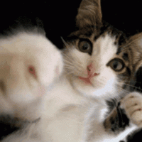
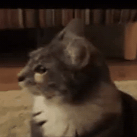
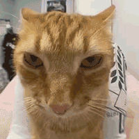
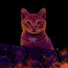
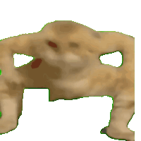
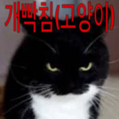
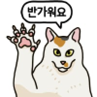
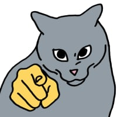
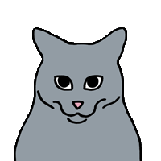
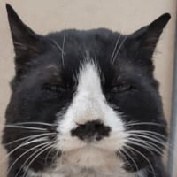

개와 고양이의 차이
댓글
... 주인?





나는 주인이에요


표독~


고양이도 주인이 시키면 공격해요
너는 나를 공경해야 한다 나는 너를 공격한다

뭔소리야 내가 니 주인인데.
주인인 내가 내 밥주는 새끼, 내 옆에 있는 새끼, 내 앞에 있는 새끼를 공격해요 아님?


집사가 언제부터 주인이었어?

좆와와:공격해요

인사했는데 폭력쓰는 고양이
https://www.youtube.com/watch?v=v9WN3L1xGzA
나는 공임

고양이에겐 주인이 없어
시중들어주는 집사와 먹이감만 있지
주인 친구 사람


ㅈ냥이 씹냥이
주?인?
고양이 말에 모순이 있는게 고양이는 스스로를 주인이라고 생각하는데 주인을 공격하는거면 스스로 자해한다는 소리냐?
시바견은 걍 주인한테도 싸가지없게 해서 개중에 제일싫음

좆냥이쉨